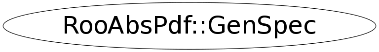

class RooAbsPdf::GenSpec
RooAbsPdf is the abstract interface for all probability density functions The class provides hybrid analytical/numerical normalization for its implementations, error tracing and a MC generator interface. A minimal implementation of a PDF class derived from RooAbsPdf should overload the evaluate() function. This functions should return PDFs value. [Normalization/Integration] Although the normalization of a PDF is an integral part of a probability density function, normalization is treated separately in RooAbsPdf. The reason is that a RooAbsPdf object is more than a PDF: it can be a building block for a more complex, composite PDF if any of its variables are functions instead of variables. In such cases the normalization of the composite may not be simply the integral over the dependents of the top level PDF as these are functions with potentially non-trivial Jacobian terms themselves. Therefore --> No explicit attempt should be made to normalize the functions output in evaluate(). In addition, RooAbsPdf objects do not have a static concept of what variables are parameters and what variables are dependents (which need to be integrated over for a correct PDF normalization). Instead the choice of normalization is always specified each time a normalized values is requested from the PDF via the getVal() method. RooAbsPdf manages the entire normalization logic of each PDF with help of a RooRealIntegral object, which coordinates the integration of a given choice of normalization. By default, RooRealIntegral will perform a fully numeric integration of all dependents. However, PDFs can advertise one or more (partial) analytical integrals of their function, and these will be used by RooRealIntegral, if it determines that this is safe (i.e. no hidden Jacobian terms, multiplication with other PDFs that have one or more dependents in commen etc) To implement analytical integrals, two functions must be implemented. First, Int_t getAnalyticalIntegral(const RooArgSet& integSet, RooArgSet& anaIntSet) advertises the analytical integrals that are supported. 'integSet' is the set of dependents for which integration is requested. The function should copy the subset of dependents it can analytically integrate to anaIntSet and return a unique identification code for this integration configuration. If no integration can be performed, zero should be returned. Second, Double_t analyticalIntegral(Int_t code) Implements the actual analytical integral(s) advertised by getAnalyticalIntegral. This functions will only be called with codes returned by getAnalyticalIntegral, except code zero. The integration range for real each dependent to be integrated can be obtained from the dependents' proxy functions min() and max(). Never call these proxy functions for any proxy not known to be a dependent via the integration code. Doing so may be ill-defined, e.g. in case the proxy holds a function, and will trigger an assert. Integrated category dependents should always be summed over all of their states. [Direct generation of observables] Any PDF dependent can be generated with the accept/reject method, but for certain PDFs more efficient methods may be implemented. To implement direct generation of one or more observables, two functions need to be implemented, similar to those for analytical integrals: Int_t getGenerator(const RooArgSet& generateVars, RooArgSet& directVars) and void generateEvent(Int_t code) The first function advertises observables that can be generated, similar to the way analytical integrals are advertised. The second function implements the generator for the advertised observables The generated dependent values should be store in the proxy objects. For this the assignment operator can be used (i.e. xProxy = 3.0 ). Never call assign to any proxy not known to be a dependent via the generation code. Doing so may be ill-defined, e.g. in case the proxy holds a function, and will trigger an assert
Function Members (Methods)
Data Members
private:
| TString | _dsetName | |
| Bool_t | _extended | |
| RooAbsGenContext* | _genContext | |
| Bool_t | _init | |
| Int_t | _nGen | |
| RooDataSet* | _protoData | |
| Bool_t | _randProto | |
| Bool_t | _resampleProto | |
| RooArgSet | _whatVars |
Class Charts
{kind=link}
{kind=link}
{kind=link}
{kind=link}

Function documentation
~GenSpec()
GenSpec(RooAbsGenContext* context, const RooArgSet& whatVars, RooDataSet* protoData, Int_t nGen, Bool_t extended, Bool_t randProto, Bool_t resampleProto, TString dsetName, Bool_t init = kFALSE)
GenSpec(RooAbsGenContext* context, const RooArgSet& whatVars, RooDataSet* protoData, Int_t nGen, Bool_t extended, Bool_t randProto, Bool_t resampleProto, TString dsetName, Bool_t init = kFALSE)